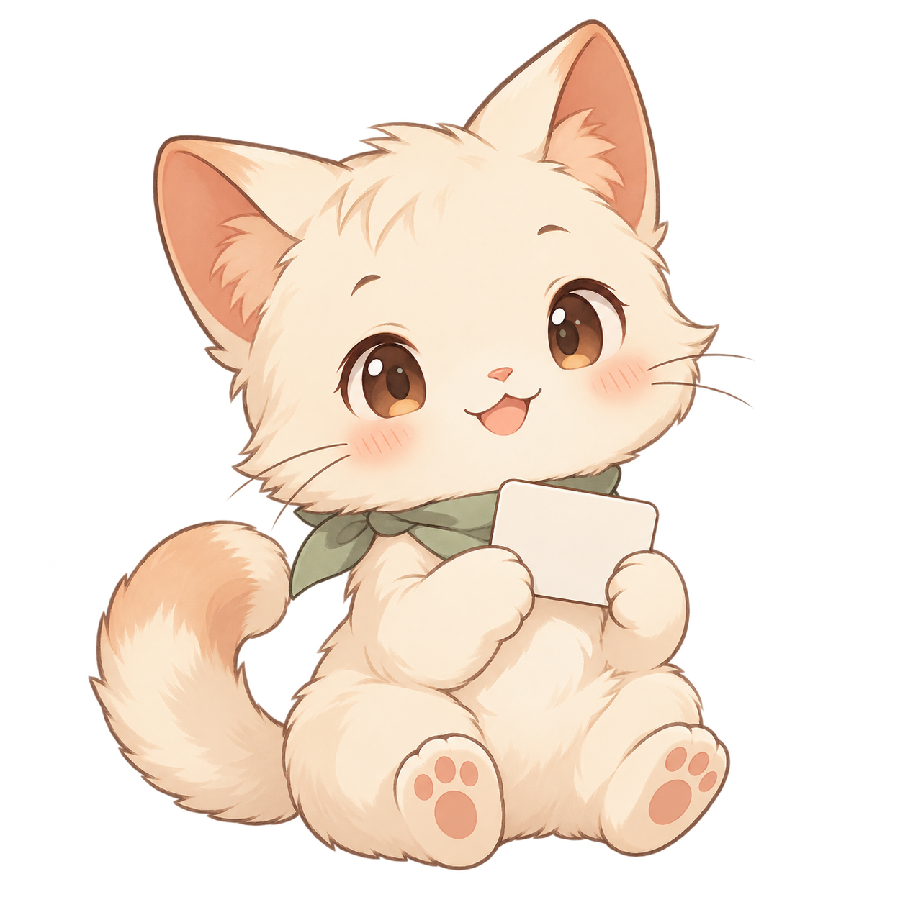
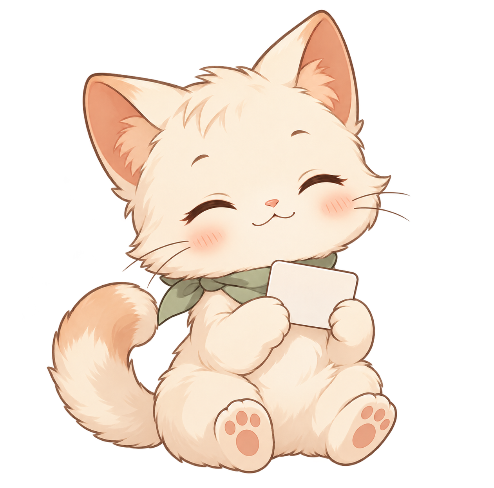
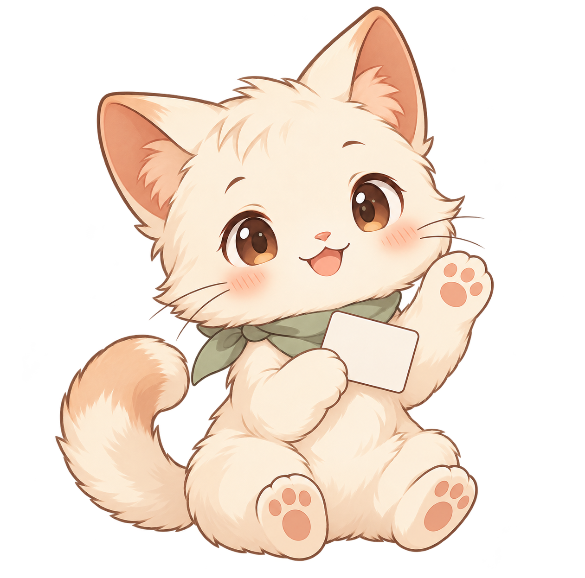
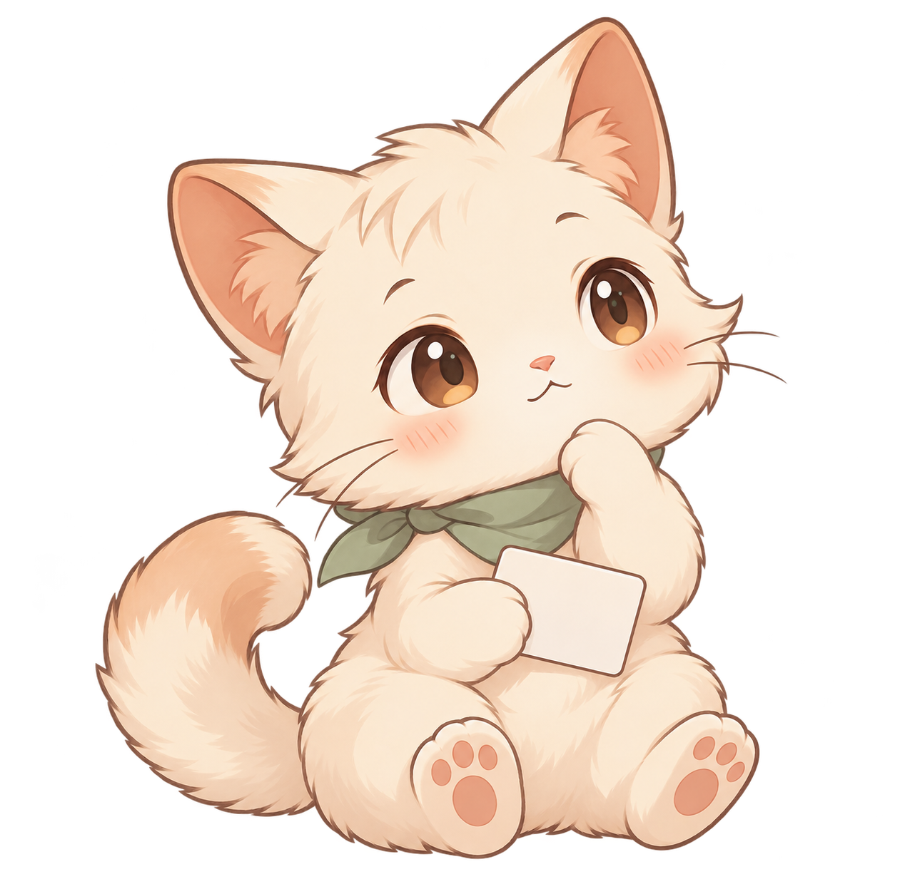
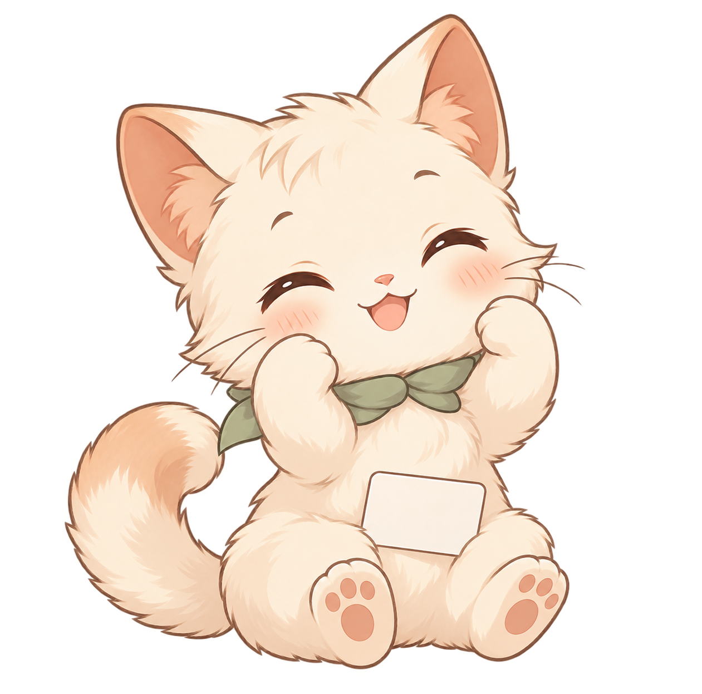
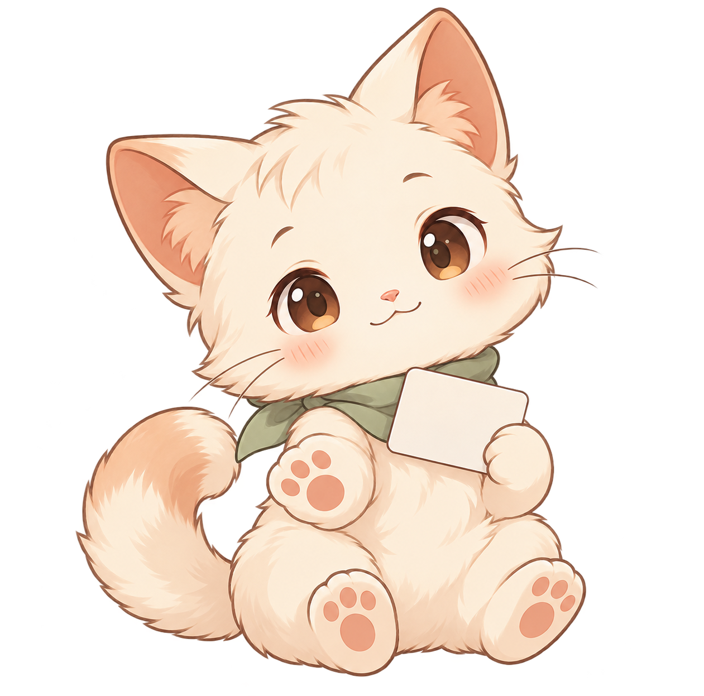
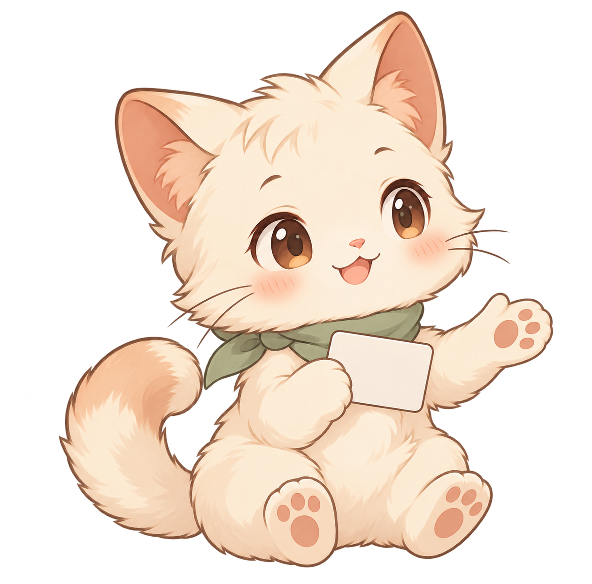
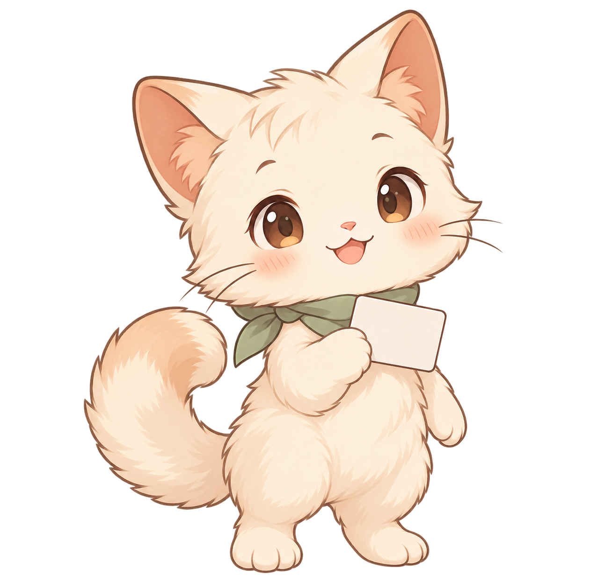
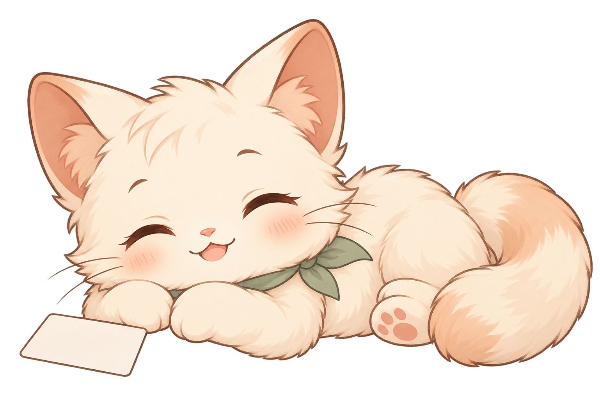

Учим понемногу
Позы, эмоции и немного движения для уютных занятий.









СпокойныйОжидание и обычная практика
Выбирай настроение кота. В спокойном состоянии он иногда моргает, а радость и приветствие сопровождаются коротким движением.